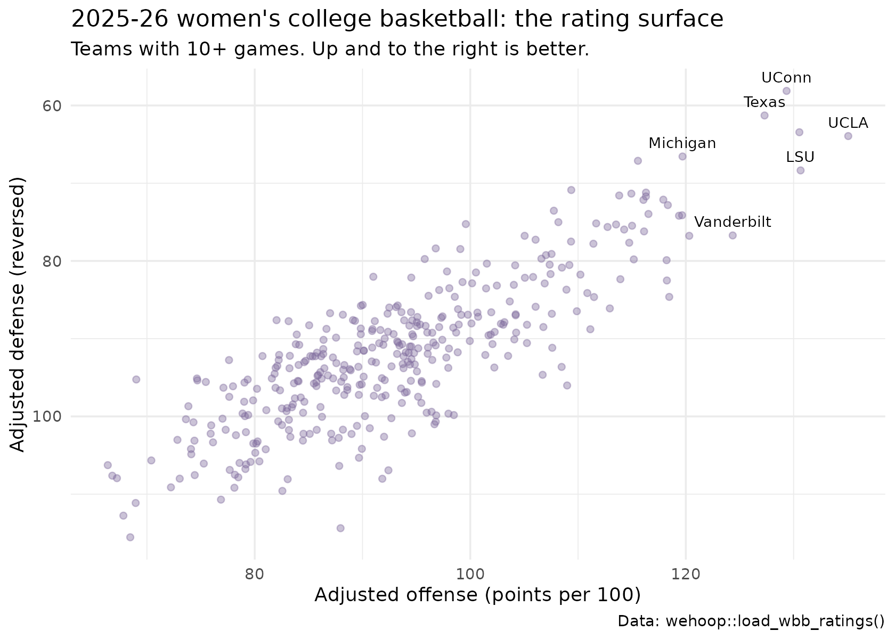

Women's College Basketball Team Ratings: Opponent-Adjusted Efficiency
Saiem Gilani
Source:vignettes/articles/womens-college-basketball-team-ratings-model.Rmd
womens-college-basketball-team-ratings-model.RmdA team that scores 110 points per 100 possessions against the
best defenses in the country is better than one that does it against the
weakest. Opponent-adjusted ratings correct for that, so every Division I
women’s team sits on one scale regardless of schedule.
load_wbb_ratings() returns, for each team and season,
adjusted offensive and defensive efficiency (points scored and allowed
per 100 possessions against an average opponent), adjusted tempo, and
the adjusted efficiency margin, the difference between the two.
This article explains what the ratings measure, how they are computed, how they are checked, and their known issues. It condenses the official model card in the wehoop-wbb-data repository; numbers quoted from that card are labelled as such.
What the model estimates
| Column | Meaning |
|---|---|
adj_o |
Adjusted offensive efficiency: points scored per 100 possessions against an average defense |
adj_d |
Adjusted defensive efficiency: points allowed per 100 possessions against an average offense (lower is better) |
adj_em |
Adjusted efficiency margin, adj_o - adj_d
|
adj_em_z |
adj_em as a z-score within the season |
adj_tempo |
Adjusted possessions per 40 minutes |
raw_o, raw_d
|
Unadjusted points scored and allowed per 100 possessions |
games, rank
|
Games in the fit and national rank by adj_em
|
The design is the same family as the KenPom and Bart Torvik ratings that are standard in college basketball analysis.
Loading the ratings
The ratings are published as Parquet files, so
load_wbb_ratings() needs the arrow
package.
ratings <- load_wbb_ratings(seasons = 2026)
nrow(ratings)
#> [1] 663The ratings carry ESPN team ids. Team names come from the box scores; cast both id columns to character so the join cannot silently fail on an integer-versus- character mismatch.
team_names <- load_wbb_team_box(seasons = 2026) |>
transmute(team_id = as.character(team_id), team = team_location) |>
distinct(team_id, .keep_all = TRUE)
ratings <- ratings |>
mutate(team_id = as.character(team_id)) |>
left_join(team_names, by = "team_id")
ratings |>
arrange(rank) |>
select(rank, team, games, adj_o, adj_d, adj_em, adj_tempo) |>
mutate(across(where(is.double), ~ round(.x, 1))) |>
print(n = 25)
#> # A tibble: 663 × 7
#> rank team games adj_o adj_d adj_em adj_tempo
#> <int> <chr> <int> <dbl> <dbl> <dbl> <dbl>
#> 1 1 UConn 39 129. 58.1 71.2 72.9
#> 2 2 UCLA 38 135. 63.9 71.1 68.2
#> 3 3 South Carolina 40 130. 63.4 67.1 71.9
#> 4 4 Texas 39 127. 61.3 66 71.8
#> 5 5 LSU 35 131. 68.4 62.3 77
#> 6 6 Michigan 35 120. 66.6 53.1 74.7
#> 7 7 Duke 36 116. 67.1 48.4 71.4
#> 8 8 Vanderbilt 34 124. 76.7 47.6 72.8
#> 9 9 Minnesota 33 118. 72.1 45.8 68
#> 10 10 Louisville 37 120. 74.1 45.5 71.3
#> 11 11 Kentucky 36 118. 72.8 45.5 68.8
#> 12 12 Maryland 33 119. 74.2 45.2 74
#> 13 13 Oklahoma 34 116. 71.2 45.1 79.6
#> 14 14 TCU 38 116. 71.7 44.6 69.4
#> 15 15 Iowa 34 116. 72.2 43.9 72.2
#> 16 16 West Virginia 35 115. 71.3 43.6 71.5
#> 17 17 Michigan State 32 120. 76.8 43.5 72.8
#> 18 18 Ohio State 35 116. 74 42.6 75.7
#> 19 19 North Carolina 36 114. 71.6 42.2 70.8
#> 20 20 Ole Miss 36 116. 76.2 39.9 69.8
#> 21 21 Notre Dame 36 115 75.5 39.5 72.6
#> 22 22 USC 32 109. 70.9 38.5 71.8
#> 23 23 Tennessee 30 114. 76 38.3 74.9
#> 24 24 Nebraska 32 118. 79.9 38.3 71.2
#> 25 25 Washington 33 114. 75.3 38.2 69
#> # ℹ 638 more rowsData
As reported in the model card, the ratings are computed from this
season’s published women’s college play-by-play and box scores, the same
files load_wbb_pbp() and load_wbb_team_box()
read. They are recomputed from scratch on every run rather than updated
incrementally, so a correction to the underlying data flows through on
the next publish.
The full table includes every opponent a Division I team played, including non-Division I teams with only a game or two. Those teams pull the overall mean far below zero, so most analysis should use the core of teams with a full schedule. The model card uses 10 or more games.
How the model works
Raw efficiency is points per 100 possessions. Adjustment asks how a team would have done against an average opponent. A team’s adjusted offense depends on how good the defenses it faced were, and those defenses’ adjusted ratings depend on the offenses they faced, so the ratings are solved together: start from raw efficiency, adjust every team for its opponents, and repeat until the numbers stop changing (a fixed point). As reported in the model card, the engine is the sportsdataverse-py women’s college prediction stack’s iterative opponent adjustment.
The model has no hidden machinery: its inputs are the game results, its output is the offense and defense split, and its main check is external agreement with reference rating systems.
ggplot(core, aes(adj_o, adj_d)) +
geom_point(alpha = 0.4, color = "#7c689c") +
geom_text(aes(label = team), data = core |> filter(rank <= 8),
size = 3, vjust = -0.8, check_overlap = TRUE) +
scale_y_reverse() +
labs(
title = "2025-26 women's college basketball: the rating surface",
subtitle = "Teams with 10+ games. Up and to the right is better.",
x = "Adjusted offense (points per 100)", y = "Adjusted defense (reversed)",
caption = "Data: wehoop::load_wbb_ratings()"
) +
theme_minimal()
How well does it work?
Internal consistency
core |>
summarise(
mean_adj_em = mean(adj_em),
cor_adj_em_vs_raw_margin = cor(adj_em, raw_o - raw_d),
cor_adj_em_vs_z = cor(adj_em, adj_em_z)
)
#> # A tibble: 1 × 3
#> mean_adj_em cor_adj_em_vs_raw_margin cor_adj_em_vs_z
#> <dbl> <dbl> <dbl>
#> 1 1.35 0.837 1The core’s mean should sit near zero, and the adjusted margin should correlate strongly but not perfectly with the raw margin. The gap below 1 is the schedule effect the model exists to remove: mid-major teams with large raw margins move down, and power-conference teams with hard schedules move up.
Does the adjusted margin explain game results better than the raw one?
For every 2025-26 game between two core teams, compare the home team’s actual margin with the difference in the two teams’ ratings. This is an in-sample check, because the season-end ratings were computed from these same games, but it shows what the adjustment adds over raw margins.
wbb_box <- load_wbb_team_box(seasons = 2026) |>
filter(team_home_away == "home") |>
transmute(
home_id = as.character(team_id), away_id = as.character(opponent_team_id),
margin = team_score - opponent_team_score
)
core_ids <- core |> transmute(team_id, adj_em, raw_margin = raw_o - raw_d)
games <- wbb_box |>
inner_join(rename_with(core_ids, ~ paste0("home_", .x)), by = c(home_id = "home_team_id")) |>
inner_join(rename_with(core_ids, ~ paste0("away_", .x)), by = c(away_id = "away_team_id"))
games |>
summarise(
games = n(),
cor_adjusted = cor(margin, home_adj_em - away_adj_em),
cor_raw = cor(margin, home_raw_margin - away_raw_margin)
)
#> # A tibble: 1 × 3
#> games cor_adjusted cor_raw
#> <int> <dbl> <dbl>
#> 1 5624 0.824 0.730Program stability across seasons
Programs persist even though rosters turn over. The year-over-year correlation of a team’s adjusted margin:
prior <- load_wbb_ratings(seasons = 2025) |>
filter(games >= 10) |>
transmute(team_id = as.character(team_id), adj_em_2025 = adj_em)
core |>
inner_join(prior, by = "team_id") |>
summarise(teams = n(), yoy_correlation = cor(adj_em, adj_em_2025))
#> # A tibble: 1 × 2
#> teams yoy_correlation
#> <int> <dbl>
#> 1 362 0.867The level gate
A rank correlation against another rating system cannot see a scale
error: multiply every rating by 100 and the ranks do not move. As
reported in the model card, the publish path therefore also checks
absolute levels over the core teams: mean adj_o in [85,
105], mean adj_d in [80, 100], mean adj_em in
[-12, 12], mean adj_tempo in [64, 78], and the spread
(standard deviation) of adj_em in [14, 28], with no
non-finite values. The gate applies once at least 150 teams have 10 or
more games. Re-running it on the 2026 release:
core |>
summarise(
core_teams = n(),
non_finite = sum(!is.finite(adj_em)),
mean_adj_o = mean(adj_o), mean_adj_d = mean(adj_d),
mean_adj_em = mean(adj_em), mean_adj_tempo = mean(adj_tempo),
sd_adj_em = sd(adj_em)
) |>
mutate(
passes = core_teams >= 150 & non_finite == 0 &
between(mean_adj_o, 85, 105) & between(mean_adj_d, 80, 100) &
between(mean_adj_em, -12, 12) & between(mean_adj_tempo, 64, 78) &
between(sd_adj_em, 14, 28)
) |>
tidyr::pivot_longer(everything(), names_to = "check", values_to = "value",
values_transform = as.character)
#> # A tibble: 8 × 2
#> check value
#> <chr> <chr>
#> 1 core_teams 363
#> 2 non_finite 0
#> 3 mean_adj_o 93.1527383415968
#> 4 mean_adj_d 91.803052785495
#> 5 mean_adj_em 1.34968555610176
#> 6 mean_adj_tempo 70.8205044550296
#> 7 sd_adj_em 21.0332135797917
#> 8 passes TRUEReproducing it yourself
- Ratings:
load_wbb_ratings(seasons = ...)(needsarrow). - Inputs:
load_wbb_team_box()andload_wbb_pbp()for the same season. - Raw ratings by hand: the advanced metrics article computes the unadjusted version from box scores.
- Method and evaluation in full: the model card.
Limitations and known issues
As reported in the model card:
- 2015 is missing. The published 2015 file has no usable ratings (the fixed point did not converge on that season’s inputs), which also leaves the 2015 player value file empty. A repair and republish is pending.
- Older seasons are thin. Seasons before about 2017 have fewer teams with a full schedule in the box scores, and seasons before 2013 sit on a different possession scale because of the older box score format. The 2008 file fails the level gate. Use pre-2017 ratings with care.
- No preseason prior. Early-season ratings start from a flat slate, so they are noisy until teams have played enough games.
- Home court and travel. Altitude and travel distance are not modelled.
Where to go next
- Women’s college win probability: the in-game model, whose pregame prior is an as-of team rating.
- Women’s college player value: box plus-minus, whose team adjustment uses the adjusted efficiency margin.
- Women’s college RAPM: player impact from lineups.
- Advanced metrics: possessions and raw ratings.
- Model dataset loaders in the function reference.